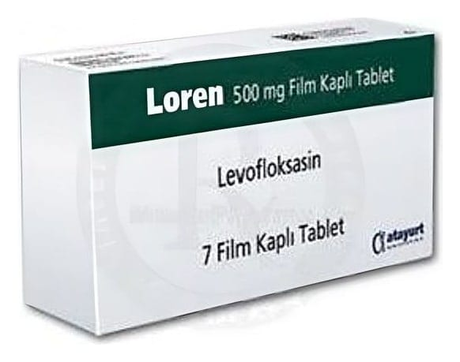

Loren 500 mg Film Tablet, 7 Adet

Ne için kullanılır
KT · Bölüm 1İ LOREN'in etkin maddesi florokinolon grubu bir antibiyotik olan levofloksasindir. LOREN 500 mg Film Tablet, 7 film tabletlik blister ambalajda bulunur. LOREN, çeşitli bakterilerin neden olduğu aşağıdaki enfeksiyonların tedavisinde kullanılır: e Sinüzit : « Uzun süredir devam eden nefes alma zorluğu olan hastalardaki solunum yolları NE enfeksiyonları * . e Zatürre « İdrar yolu enfeksiyonları
. Deri ve yumuşak doku enfeksiyonları « Prostat enfeksiyonu